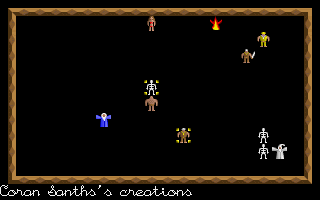

| Morkin 2 Anthony Hamilton |
|  |
Chaos is one of my favourite games ever. The ultimate multiplayer
strategy game, it's beaten its would-be successors into the dust every
time. In fact, the only game that really bettered it was its sequel.
Julian Gollop's masterpiece has even made contributions to my English
GCSE, and not too many games can say that. To attempt to remake this
game would be to attempt to remake the pyramids, or the hanging gardens
of Babylon. So it was with fear and trepidation that I downloaded
Anthony Hamilton's 1992 DOS-based conversion. Would it be as good as the
original? Or would it be such a disgrace to its honour that all copies
would have to be burnt (doubly unfortunate, because I'm running out of
disks)?
Thankfully, Morkin 2 is destined to suffer no such ignominy. In fact, it's pretty good. I don't think I've seen any other (complete) Chaos remakes, so finding this one was quite a surprise. Being quite an old game, it naturally ran very nicely on my state-of-the-art (circa 1996) machine, although some might find problems with the unusual screen resolution (640x400). Morkin 2 also supports Soundblaster-compatible soundcards, as well as the PC's internal beeper. |
|
|
Graphically Chaos was never really anything to write home about. Not in
screenshots anyway. But when you saw it moving... Almost everything in
Chaos is animated. When the screen is filled with Magic Fire or Gooey
Blob, the entire playing area burns and pulsates. The game is alive,
even while you're pondering your next strategic manouevre.
Unfortunately, while Morkin 2's graphics are sound, and inevitably more
colourful than the original's, they are rather lacking on the animation
front.
But graphics were always second to the game, anyway. It plays very much like the original Chaos, albeit with a much smoother interface thank to the use of the mouse as a control mechanism. Not having to get used to the keys really opens the game up a lot more to people who otherwise wouldn't be able to get into it. Movement is a bit strange, with long- ranged characters having to move a square at a time, but nothing totally ridiculous is lying in wait to catch you out. The game is turn-based, like the original, although the menu system of the original is more or less removed. |

| |

|
The biggest change is in the realm of spellcasting. In the original,
spells were either Lawful or Chaotic, and as wizards cast spells the
alignment of the universe shifted in the direction of the spell they
cast, thus making either Lawful or Chaotic spells easier to cast. Each
wizard also received a random, but limited selection of spells. Once a
spell had been cast, that was it - it could not be reused. In Morkin 2,
spells are cast around a Mana system. You start with 25 'spell points',
which you can spend on any of the spells you want, as many times as your
ration of spell points will allow. During the game your spell points are
replenished, allowing you to save for more powerful spells, at the cost
of not casting any now.
There are other, minor changes, too - there is no skill setting for the computer-controlled wizards, forcing you to play against either another person, yourself, or a far, far superior wizard. The number of players has also been reduced, for some reason, from eight to five. There are also minor rule differences; there seems to be no need to have line-of- sight with ranged attacks, for instance. To complain about these differences would be churlish; Morkin 2 doesn't set out to be the same game. It's differences make it its own, and it's worth playing in its own right. If you haven't played either game, then you may very well prefer this remake. Those old farts amongst us will probably stick with the original. But that doesn't stop Morkin 2 from being a darn fine game. |

|
Graphics: 70° Well-drawn, although not big on detail Sound: 40° Nice spot effects, although not too many of 'em Life Expectancy: 85° Quite possibly destined for as long a life as Chaos Gameplay: 75° A few minor niggles, although most are pro-Chaos prejudices Summary: It's Chaos, Jim - but not as we know it. Nathan Cross |